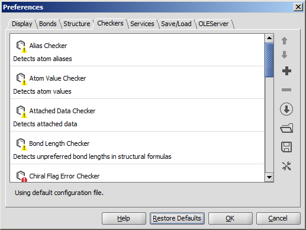

MarvinView : Checkers MV

- Move up/down the checker items: the fixing process may depend on the sequence of the checkers. Checking order can be set using the Up/Down buttons on selected checkers.
- Add checkers to the list: the default list can be modified by adding other checkers.
- Remove checkers from the list: the default list can be modified by removing checkers not needed.
- Open checker configuration from URL open a checker configuration from URL.
- Open checker configuration: open your custom checker configuration from file.
- Save checker configuration: save your custom checker configuration to file.
- Configure external checkers/fixers: add external checkers/fixers; save or load external checker/fixer configuration.